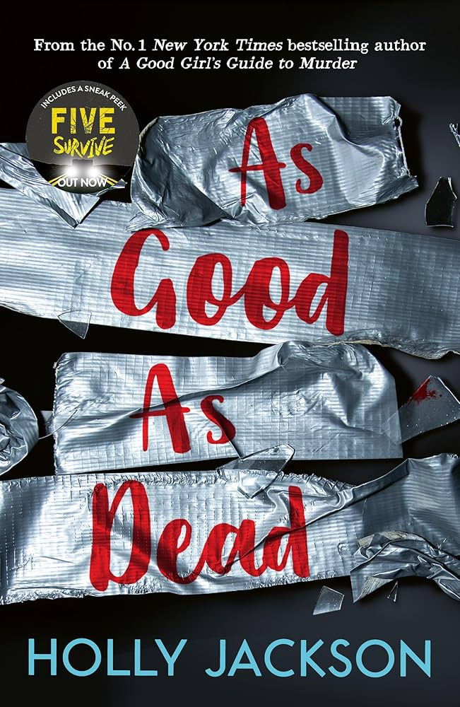

"As Good As Dead" is the thrilling conclusion to Holly Jackson's "A Good Girl's Guide to Murder" trilogy.
The story follows protagonist Pip Fitz-Amobi as she deals with the aftermath of her true crime podcast and the miscarriages of justice it uncovered.
After being sued for libel by serial rapist Max Hastings, who was acquitted in the previous book, Pip finds herself being stalked by someone leaving dead pigeons and ominous messages. She discovers this is the calling card of the DT Killer, a serial murderer everyone assumes is already in jail.
However, Pip is eventually abducted by her stalker, who turns out to be Jason Bell, the father of Andie Bell - the subject of Pip's first podcast season. Pip manages to escape but decides Jason must face justice. She returns and kills him in self-defense. With Ravi's help, Pip cleans up the crime scene and implicates Max as the killer, believing he deserves punishment for his crimes.
Despite her guilt, Pip's plan succeeds and Max is convicted for Jason's murder. Pip distances herself from loved ones to avoid being implicated. Over a year later, Max is convicted and Pip receives a message from Ravi, hinting at a possible reunion.
The novel explores themes of justice, the struggle to be heard, and the moral complexities of Pip's actions.
While Max was guilty, framing him came at a personal cost for Pip. The ending leaves her future uncertain as she heads to college,
but hopeful for a chance to reconnect with Ravi.